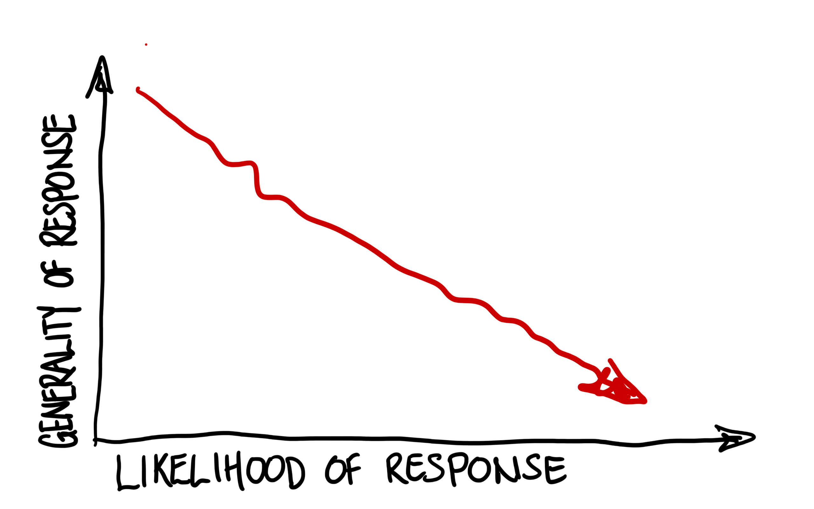
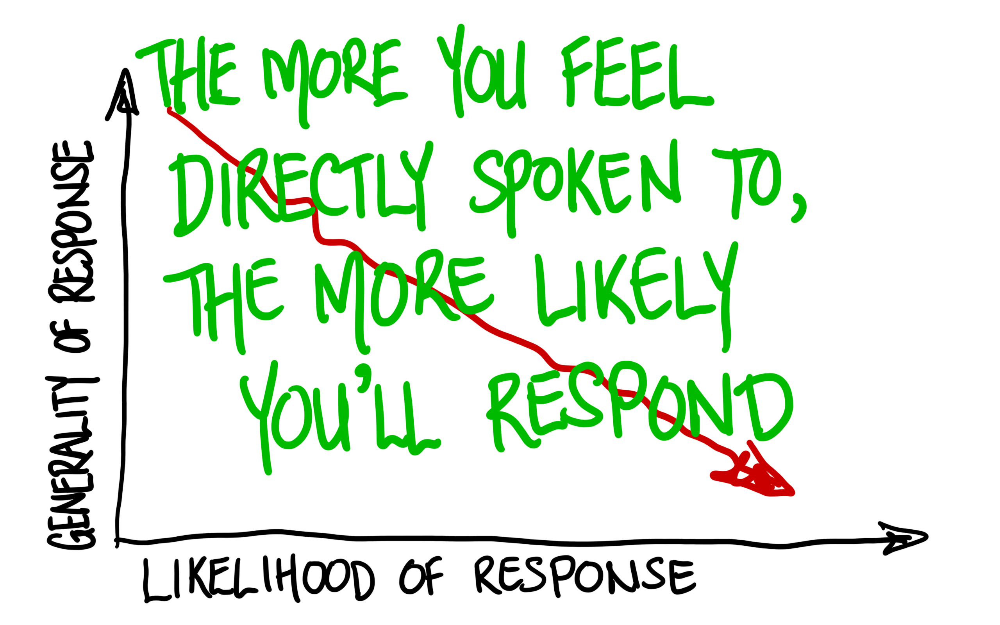

Statistical
Software Peer-Review
The Importance and Challenge
of Community Engagement
Mark Padgham & Noam Ross
Software Peer-Review
Software Peer-Review
Software Peer-Review
is a
journal
community
Software Peer-Review
is a
gate
door
Activities
- Software Peer-Review
- Multi-lingual Publishing and Access
- Champions Program
- R Universe Platform
- Community Calls
- Co-working, Blog, Forum, & more
Activities
- Software Peer-Review
Software Peer Review
Everything you need to know is in
devguide.ropensci.org
stats-devguide.ropensci.org

: Why
Software Peer Review?
- Improve software quality
- Badge of success
- Your software identified with rOpenSci
- Software as “genuine” research output
: Why
Software Peer Review?
- User and developer community
- Eases software dev & maintenance
- Enhances software longevity
- Our newsletter highlights calls for help and/or co-maintainers
: Why
Software Peer Review?
You'll make better software
with our community
Software Peer Review
Please submit
your software!
Software Peer-Review
work together
Software Peer Review
Categories (8):
- data deposition
- data validation and testing
- workflow automation
- version control
- citation management and bibliometrics
- scentific software wrappers
- field and laboratory reproducibility tools
- database software bindings
Software Peer Review
Categories (8):
... but no statistical softare, even though ...
-
 (still) only peer-reviews
(still) only peer-reviews
 packages
packages -
is an environment for Statistical Computing
Software Peer Review
Expansion Project funded by
... 2.5 years
later ...
Statistical
Software Peer-Review
Statistical
Software Peer-Review
How?
What
is
Statistical
Software?
Statistical Software
- Read software code
- Read conference proceedings
- Read journal articles
- Look for common patterns
Lots more information at
github.com/ropensci/statistical-software
Statistical Software Categories
- Bayesian and Monte Carlo software
- Exploratory Data Analysis and Summary Statistics
- Machine Learning Software
- Regression and Supervised Learning
- Spatial Software
- Time Series Software
- Dimensionality Reduction, Clustering, and Unsupervised Learning
- Probability Distributions
How can we assess
Statistical Software?
How can we assess
Statistical Software?
How can we assess
Statistical Software?
“ Why did you use a tolerance of 1-10 instead of 1-12? ”
“ I think there are issues with how you
test convergence behaviour ... ”
How can we assess
Statistical Software?
Standardisation
Standardisation
- Aids software review
- Improves software quality
- Aids software maintenance
How can we
write standards for
Statistical Software?
How can we
write standards for
Statistical Software?
- Read software code
- Read conference proceedings
- Read journal articles
- Look for common patterns
How can we
write standards for
Statistical Software?
- Look for common patterns
Statistical Software
- common patterns
- ➜ common practices
- ➜ good practices
- ➜ standards
| Category | #Stds. |
|---|---|
| General | 40 |
| Bayesian | 48 |
| Probability distributions | 13 |
| Exploratory Data Analysis | 25 |
| Machine Learning | 53 |
| Regression | 43 |
| Spatial | 33 |
| Time-series | 37 |
| Unsupervised Learning | 28 |
8 Categories
320 Standards
Difficulty for
submitting authors:
general
stats
Difficulty for
submitting authors:
general
stats
... reviewers?
... or maintainers?
Statistical Software
- Need to document and assess standards compliance in a way that aids review and maintanance processes
- A system to document standards in code
- A system to automatically generate reports on standards compliance.
- A general system to automate checking of, and reporting on, all submitted packages
Statistical Software
Statistical Software
Standards
- Initial draft standards
- Versioned, intended to evolve
- Aim: Community maintenance
- Next Step: Gather community input
Community
- Around 250 packages
- Over 500 registered reviewers
- Very active Slack:
- ~1,000 members
- ~200 monthly active
- Blog with 100s of regular readers
- Regular community calls & other events
has a very large
and active
Community
Community Engagement
- Community Calls
- Slack Channel
- Advisory Board and their networks
- Newsletter updates
- A lot of direct communication
- Encouraging feedback
Community Engagement
for initial phases:
- A lot of direct communication
Statistical
Software Peer-Review
- ✔ Draft Standards
- ✔ Package submissions
- ☐ Community feedback on standards
Statistical
Software Peer-Review
- ☐ Community feedback on standards
Community
Feedback on Standards
is a lot of work
| Method | Mode | Success |
|---|---|---|
| Direct requests | 1 ➜ 1 | ✔✔✔ |
| Direct requests | 1 ➜ many | ✔ |
| Broadcast requests | ? ➜ many | ? |
“ Our standards are open and intended to change and evolve in response to public feedback. Please contribute via the GitHub discussions pages for this book. We particularly encourage anybody preparing software for submission to discuss any aspects of our standards, including applicability, validity, phrasing, expectations, reasons for standards, and even the addition or removal of specific standards. ”
stats-devguide.ropensci.org
Challenges in eliciting community feedback

Challenges in eliciting community feedback

Challenges in eliciting community feedback
Challenges in eliciting community feedback
Challenges in eliciting community feedback
Challenges in eliciting community feedback
Challenges in eliciting community feedback
Strategies for eliciting community feedback
Strategies for eliciting community feedback
- Utilise, nurture, expand personal networks
- Target small, focussed groups over individuals
- Organise workshops, events-within-events
Active maintenance
requires actively
seeking
community support
Statistical
Software Peer-Review
- ✔ Draft Standards
- ✔ Package submissions
- ☐ Community feedback on standards